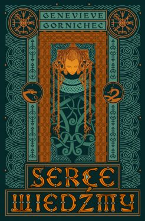

W środę 18 maja oficjalną premierę miała książka „Serce wiedźmy” autorstwa Genevieve Gornichec. Czerpiąca z nordyckich legend, ponadczasowa opowieść o miłości i zdradzie, przyjaźni i lojalności, początkach i zakończeniach. Ksiązka w tłumaczeniu Roberta J. Szmidta już w sprzedaży!

Od lat kupuje i jestem zadowolony z tego portalu, dawniej jak i teraz jest dużo firm które współpracują z tą firmą. Jest bardzo dużo promocji. Dziwi mnie dlaczego taka mała ilość jest gwiazdek. ja nigdy nie doświadczyłem nie przyjemności przez ten portal dlatego moja ocena jest zadowalająca.
Duży wybór i okazyjne ceny. Ogólnie jako wyłącznie kupujący jestem zadowolony. Mam pewność, że dostanę towar albo zwrot kasy, szybka wysyłka